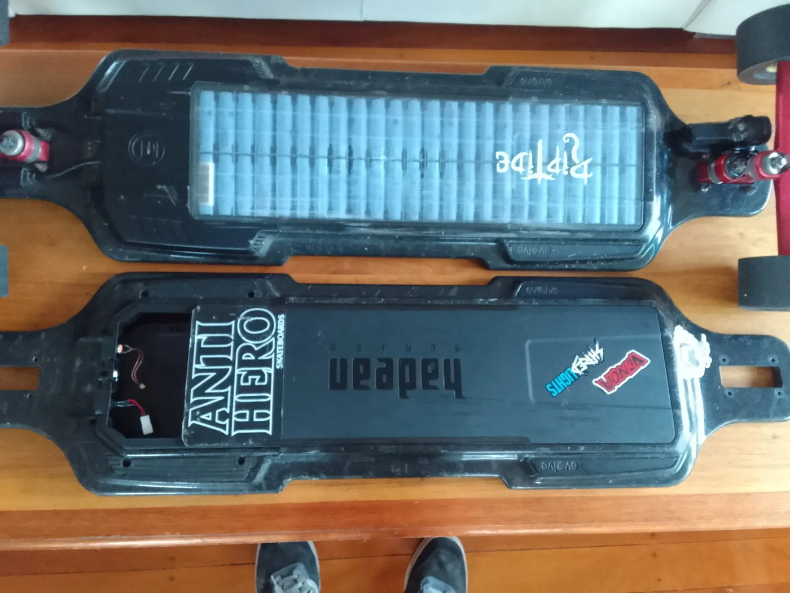
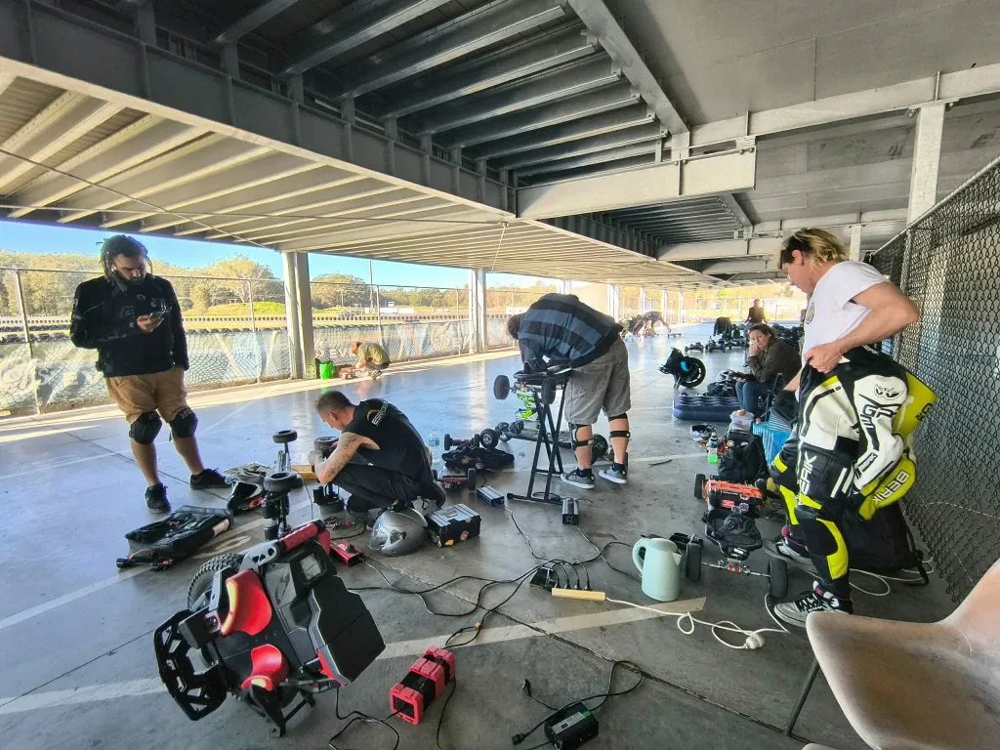
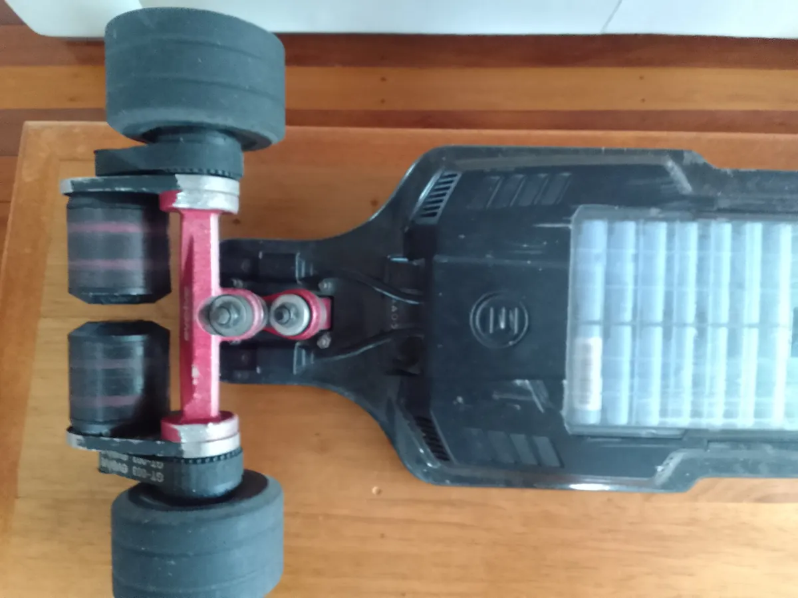
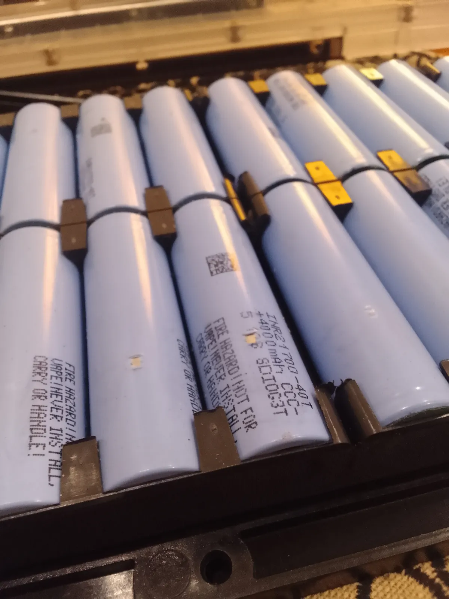
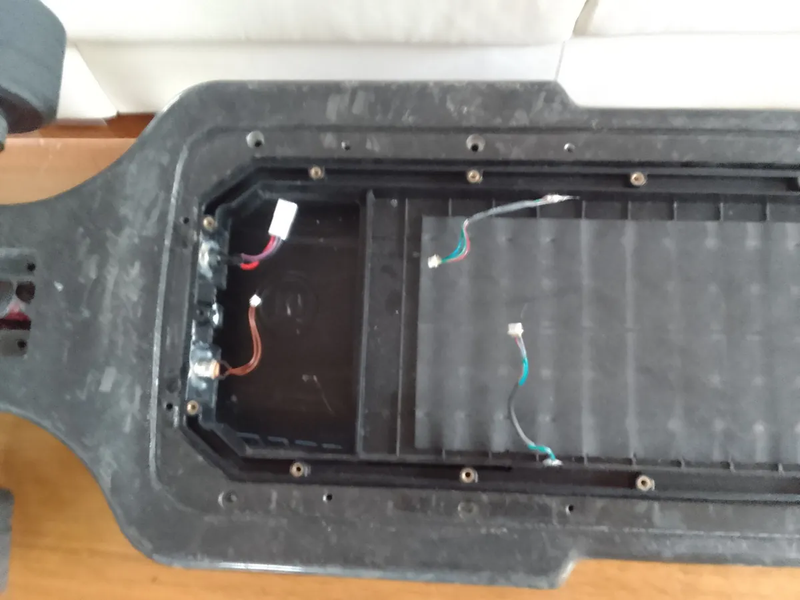
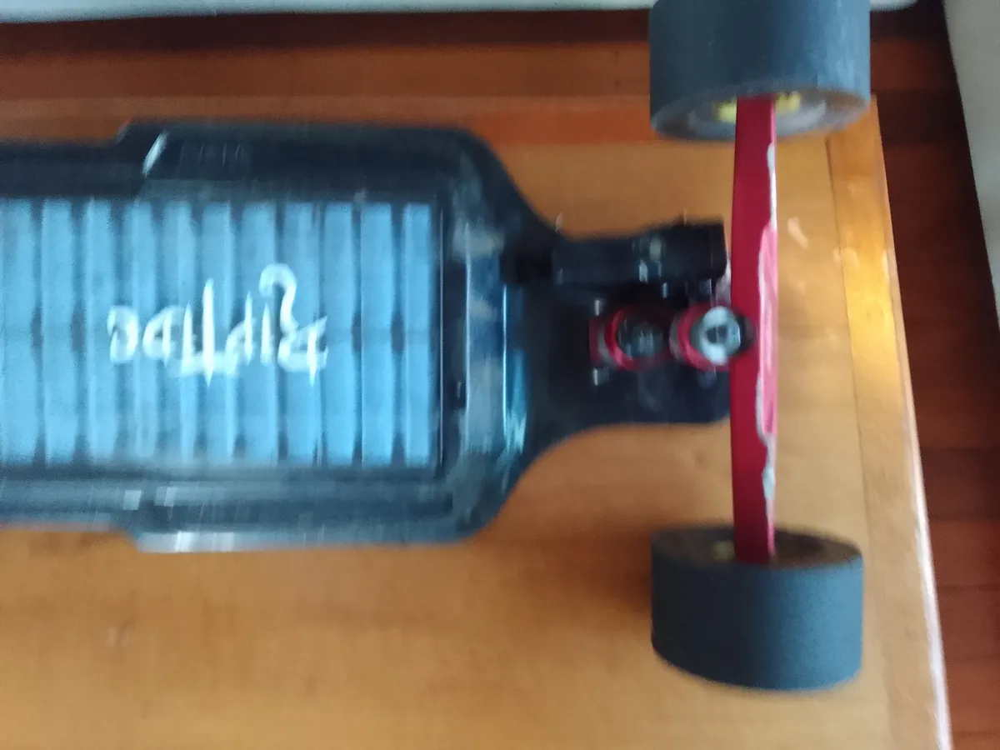

A stock Evolve Diablo Carbon, taken apart at the engineering level,
understood before it's modified — with a reversible high-voltage conversion on the bench.
Everything starts from one machine: a stock Evolve Diablo Carbon —
and a determination to know exactly what it can do.

The hybrid board next to the spare carbon Diablo chassis prepared for Stage 1.
as found
Battery12S4P · Samsung 21700-40T · 16 Ah
MotorsDual 6374-class outrunners
ControllerEvolve EFOC 2.0
RemoteEvolve Phaze
Gearing16T pinion · 32T wheel · ~107 mm poly
Observed~70 km/h stock · ~78 km/h field-weakened
The board arrived already unusual: a factory one-off hybrid — Diablo controller
internals and 3500 W motors grafted into a Hadean battery enclosure, with custom BMS firmware
so the two generations could talk. Six years and roughly 10,000 km on Evolve hardware
(Stoke → GTR Gen 1 → Hadean → Diablo) is what made "just a skateboard" insufficient.
At ESRA Nationals in Coffs Harbour, pushing stock hardware against custom race
builds exposed the real ceiling: battery sag and voltage, not rider input. That is the problem
Frankenstein exists to solve.

ESRA Nationals pit lane — riders on 15-minute fast-charge turnarounds while stock hardware was pushed to its limit.
02 / THE APPROACH
Understand Before You Modify
No black boxes. Before a single part was swapped, the board's behaviour was
mapped through its own diagnostics — custom tooling built in-house, on both mobile and desktop.
DONE
Tuning & Telemetry
Custom mobile tooling for live controller tuning and logging — field weakening, current limits,
speed references and protection thresholds, all verified with read-back before a ride.
Stationary safety checks before every write
Live battery group sag & recovery logging
Tune-versus-speed comparison runs
DONE
Workshop Diagnostics
A desktop diagnostic suite for the workshop bench — controller and battery telemetry side by
side, persistent session logbook, and exportable reports for the technical record.
Simultaneous controller + battery links
Cell voltages, temperatures, fault history
Strictly read-only over Bluetooth
ACTIVE
Remote Compatibility
Ongoing study of keeping the Phaze remote working through the conversion — protocol analysis
and a microcontroller BLE bridge are the active workstreams.
Remote communication fully mapped
nRF52840 bridge in development
16S battery-display constraint identified
What the investigation established
Field weakening is a bounded control loop, not a magic number — its limits, scaling and
protection thresholds are measured and documented.
Tuning changes live in volatile memory — a power-cycle returns the board to factory
behaviour. Nothing permanent without a deliberate flash.
The battery's real weakness is dynamic: cell groups that look balanced at rest sag
measurably under load — invisible without live logging.
The remote's battery display has a hard ceiling above 65.5 V — a genuine design
constraint any 16S conversion must respect.
at restunder loadgroup 7 sags first — invisible without live logging
Honest boundary: this is a personal research project.
Findings are specific to this board's firmware revision and configuration — not a product
specification, and not endorsed by Evolve.


02b / FIELD GUIDE
Read this before the spec sheet
The build talks in shorthand. These are the terms that matter —
plain-language versions, no engineering degree required.
12S4P → 16S3P
Battery shorthand. The first number is cells in series (sets voltage), the second is strings in parallel (sets capacity). Going 12→16 series adds ~33% voltage; going 4→3 parallel trades some capacity for it. Same 48 cells, rearranged.
Field weakening
A controller technique that trades some efficiency for top speed — it deliberately weakens the motor's magnetic field at high RPM. On this board it's a bounded, reversible control loop, verified parameter by parameter.
VESC / D100S
VESC is an open-source motor-controller platform; the D100S is a controller built around it, sized to drop into the factory mounting pattern. It replaces the proprietary EFOC 2.0 as the Stage 1 brain.
Sag
Voltage drop under load. A healthy pack holds its voltage when you pull amps; an aged or imbalanced one dips — and the controller reads that dip as lost performance. This project's forensics work exists because of sag.
P50B / 21700-40T
Cell model numbers. P50B is a Molicel high-discharge cell; the stock pack uses Samsung 21700-40T cells. Cell choice sets the pack's voltage ceiling, current ceiling, and how gracefully it sags.
BLE bridge
Bluetooth Low Energy link. The ambition is a small nRF52840 module that translates between the Phaze remote's protocol and the new controller — keeping the stock remote alive through the conversion.
03 / THE MACHINE
The Conversion
Stage 1 breaks the voltage ceiling while keeping the Evolve soul.
Stage 2 is designed for whatever comes after. The factory deck stays uncut.
STAGE 1
16S3P · Molicel P50B · D100S VESC
IN PROGRESS
Battery — Marsen Energy 16S3P P50B
Same 48 cells rearranged: 12S4P → 16S3P Molicel P50B.
67.2 V peak / 57.6 V nominal — a +33% voltage boost with dramatically lower sag,
in the exact Diablo tray volume.
PROPOSED — pack design agreed, build pending
Controller — MakerX D100S (VESC)
Open-source VESC-based controller designed to drop into the factory bay on the original
mounting pattern, with adapter looms so nothing in the carbon shell gets cut.
PROPOSED — mechanical design done, not yet fitted
Motors — dual 6374 retained
The existing motors stay. Speed gains come from voltage and field weakening,
not a motor swap — keeping the build reversible and cheap to unwind.
DONE — retained by design
Remote — Phaze compatibility
Ambition: keep the Phaze remote working through the nRF52840 BLE bridge.
The remote's communication is fully mapped; the 16S battery-display
overflow is a known, documented constraint.
RESEARCH — bridge in development

Spare carbon chassis — the Stage 1 donor. Factory mounts preserved for a clean swap. Dot positions are illustrative.
The voltage story
Same 48 cells. Different arrangement. The ceiling moves — everything else stays reversible.
12S4P · STOCK
Nominal
43.2 V
Peak
50.4 V
Observed top
~70 km/h
16S3P · FRANKENSTEIN
Nominal
57.6 V
Peak
67.2 V
Projected top
unverified
12 series × 4 parallel — 43.2 V nominal
Same 48 cells, different topology — series count sets voltage, parallel count sets capacity and sag.
Pack maths, not magic
Series count sets voltage. Parallel count sets capacity. Drag the sliders —
the same arithmetic the 12S4P → 16S3P jump is built on.
NOMINAL 57.6 VPEAK 67.2 VCELLS 48ENERGY* 2,880 Wh
*Using 50 Ah cells at nominal voltage — an approximation for comparison, not a pack rating.
Observed figures are configuration-specific. The 16S speed projection is deliberately unverified — no number is claimed until the pack is built and measured.
Field weakening, honestly
Drag the dial — this is a conceptual illustration of the trade-off, not measured data.
On the real board, every limit is verified parameter by parameter before a single ride.
TOP SPEED baselineEFFICIENCY 100%HEAT low
Conceptual model for illustration only — the board's actual FW envelope is bounded, logged and revertible on power-cycle.
STAGE 2
The horizon
AMBITION — NOT A PLAN
Stage 1 proves the platform. Stage 2 is whatever the evidence says
it can carry — listed here as directions, not commitments.
Cell upgrade path
P60C-class cells are the known ceiling-raiser — roughly 12+ months out, gated on real Stage 1 data, not ambition.
Platform reuse
The donor-tray form factor and preserved factory mounts mean the conversion approach could transfer to other Evolve boards.
What stays unknown
Motor KV is unmeasured, the 16S thermal envelope is unproven, and the Phaze bridge is unfinished. Stage 2 begins when those have answers.

Reversible by design
The stock 12S4P pack and stock EFOC 2.0 controller stay intact and preserved.
Every modification lives on the spare carbon chassis — if Frankenstein doesn't
work out, the factory setup rides home untouched. Even the tuning software is
volatile-memory only: power-cycle reverts.
04 / THE TIMELINE
The Log
Milestones, in order. Speculative items are labelled — nothing
proposed is presented as finished hardware.
doneactiveproposedunverified
GENESIS
The hybrid donor
Diablo controller internals and 3500 W motors grafted into a Hadean enclosure — a factory one-off that started the whole obsession.
COFFS HARBOUR
ESRA Nationals
Six hours of track practice on a 9-month-old pack. Battery sag, not rider error, became the wall — and the brief.
THE TEARDOWN
Inside the black box
Custom tooling built to talk to the controller directly — live tuning, battery forensics and fault monitoring from a phone.
FIELD WEAKENING
Limits mapped, safely
The FW control loop, its limiter and protection boundaries verified piece by piece. ~78 km/h observed; every change revertible on power-cycle.
BATTERY FORENSICS
Why the pack faded
Live sag logging caught one cell group dropping under load while resting voltages looked balanced. Teardown found enclosure ribs wearing through cell sleeves. Pack sent for repair.
FRANKENSTEIN
Two-stage plan on spare chassis
Stage 1: 16S3P P50B + D100S VESC on factory mounts. Stage 2: whatever the platform proves it can take.
SOFTWARE
Workshop diagnostics
A desktop diagnostic suite with simultaneous controller and battery links, session logbook and exportable reports — verified on live hardware.
NEXT
Bridge & battery build
nRF52840 BLE bridge development and the Marsen 16S3P pack build are the active workstreams.
05 / SCOREBOARD
Honest Status
Everything below is labelled by what it actually is —
no proposed spec is dressed up as completed hardware.
Verified working
Custom mobile tuning & telemetry tooling
Field-weakening limits mapped and safely applied
Desktop diagnostic suite (live hardware)
Battery sag forensics & fault monitoring
In progress
12S pack cell-group repair (at technician)
nRF52840 BLE bridge development
Stage 1 mechanical design & looms
Proposed, not built
16S3P Molicel P50B pack (design agreed)
D100S VESC drop-in (mount designed)
Phaze-remote-over-bridge compatibility
Unverified / open
Motor KV measurement (needed for speed projections)
16S real-world top speed & thermal envelope
P60C cell upgrade path (~12+ months out)
The pre-ride ritual
0 / 6 cleared
The same discipline the log applies to every modification,
applied to every ride. Tick them off — this demo remembers your progress on this device.